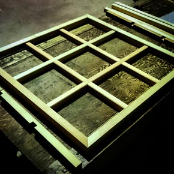
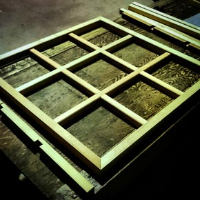

Please Click on  to reveal details of each item.
to reveal details of each item.
Education
2016-2017
Tokyo / JPN
Web Designer / Director Training
Adjust Academy
6 months of intensive Web Designer / Director course, learning the application of HTML 5 / CSS3 / JavaScript / jQuery / Basic PHP Form Building / WordPress.
2016-2017
Tokyo / JPN
Web Designer / Director Training
Adjust Academy
6 months of intensive Web Designer / Director course, learning the application of HTML 5 / CSS3 / JavaScript / jQuery / Basic PHP Form Building / WordPress.
2015-2016
Toyama / JPN
Architectural Carpentry Training
Shokugei-Gakuein
1 year intensive Carpentry Training learning to use hand tools in building sustainable wooden structures without the use of nails or modern practices.
2015-2016
Toyama / JPN
Architectural Carpentry Training
Shokugei-Gakuein
1 year intensive Carpentry Training learning to use hand tools in building sustainable wooden structures without the use of nails or modern practices.
 



2003-2008
New York / USA
Bachelor of Architecture
Pratt Institute
5 years of Design Thinking through research, presentations, and critiques relevant to architectural projects. Interest in social aspects of ... read more Design Building naturally led to a Thesis Research that involved design of community space of mixed Elderly homes and a Kindergarten / Nursing school.
2003-2008
New York / USA
Bachelor of Architecture
Pratt Institute
5 years of Design Thinking through research, presentations, and critiques relevant to architectural projects. Interest in social aspects of ... read more Design Building naturally led to a Thesis Research that involved design of community space of mixed Elderly homes and a Kindergarten / Nursing school.
Work Experience
2015-2017
Tokyo / JPN
Designer
Freelance
Web Banners for VillageHouse.
Visuals / Presentations / Product Design for Animaru Isu.
2015-2017
Tokyo / JPN
Designer
Freelance
Web Banners for VillageHouse.
Visuals / Presentations / Product Design for Animaru Isu.
Description
Since making use of a smartphone in my life in 2015, it impacted me greatly in how I think about Designing. It is a privilege to be able to impact businesses and lifestyles in need through the application of Design Thinking and Building positively.
Projects
Web Banners for VillageHouse
Visuals / Presentations / Product Design for Animaru Isu.
* displayed in Tokyo Design Week 2016
Skills
Creating Collaboration Projects that are self-initiated.
Implementing design research into design direction that is fresh and original.
Working well with different age groups - from children to the elderly.
Effective Communication with clients and buyers through presentations.
2013-2015
Tokyo / JPN
Surveyor
Harashiba Kenchiku Sokuryo
Over 50+ modern buildings ( highrises, public schools, roads, condos ).
Over 5+ wooden buildings ( Japanese temple, shrines, traditional houses ).
2013-2015
Tokyo / JPN
Surveyor
Harashiba Kenchiku Sokuryo
Over 50+ modern buildings ( highrises, public schools, roads, condos ).
Over 5+ wooden buildings ( Japanese temple, shrines, traditional houses ).
Description
Working in Pairs to mark architectural construction blueprints onto actual materials at 1 to 1 scale. Communicating with and directing other Builders and Craftsmen where each element at a construction site will be located by writing specific markings in ink.
Projects On-Site
Over 50+ modern buildings (highrises, public schools, roads, condos).
Over 5+ wooden buildings (Japanese temple, shrines, traditional houses).
Skills
Rational and quick decision-making in extreme work conditions.
Effective, articulate, and accurate communication and teamwork.
Strong literacy and execution in construction drawings.
Strength in numbers and visuals.
Reliability in precision and details in less than millimeter degrees
2009-2013
Shizuoka,
Nagano,
Nagoya / JPN
Carpenter
Ooune Kenchiku / Shimizu Bankin
Restoration / Renovation of 200 year old traditional Japanese home.
Construction of Work Studio for Furniture Woodworker ... read more
2009-2013
Shizuoka,
Nagano,
Nagoya / JPN
Carpenter
Ooune Kenchiku / Shimizu Bankin
Restoration / Renovation of 200 year old traditional Japanese home.
Construction of Work Studio for Furniture Woodworker ... read more
Description
After studying Architectural Design, I travelled project-based and lived and worked with gifted Japanese Carpenters and Craftsmen who took me into their homes as a family member and Apprentice in training.
Projects On-Site
Restoration / Renovation of 200 year old traditional Japanese home.
Construction of Work Studio for Furniture Woodworker.
Interior Renovation of Shared Office.
Roof Construction / SheetMetal Worker - 6 houses.
Construction of Work Studio in no-nail Japanese Joinery woodwork.
Volunteer for Seismic Research testing traditional Japanese construction.
Skills
Rational and quick decision-making in extreme work conditions.
Effective, articulate, and accurate communication and teamwork.
Strong literacy and execution in construction drawings.
Strength in numbers and visuals.
Reliability in precision and details in less than millimeter degrees